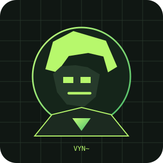

NYX_
SURVIVAL / SYSTEMS
NYXRise
Server project dengan fokus pada survival gameplay, economy, konfigurasi, dan custom server experience.
Saya Vyn, developer server Minecraft yang berfokus pada setup Paper, konfigurasi plugin, pengembangan sistem server, dan troubleshooting.
Paper Minecraft 1.21.11

Saya memiliki pengalaman setup server Minecraft Paper 1.21.11 pada dua server. Pengalaman saya masih terus berkembang, tetapi saya cukup memahami konfigurasi plugin, penyesuaian fitur, pengelolaan server, dan menghubungkan berbagai sistem agar gameplay berjalan sesuai kebutuhan.
Saya percaya server yang baik bukan hanya soal plugin yang banyak, tetapi bagaimana setiap sistem bekerja bersama, mudah dikelola, dan memberi pengalaman bermain yang nyaman.
Server project dengan fokus pada survival gameplay, economy, konfigurasi, dan custom server experience.
Project server dengan sistem rank, economy, mining, gacha, warp, dan fitur komunitas.
Eksplorasi website untuk memperkenalkan server, menyajikan informasi, dan menghubungkan komunitas.
Setup awal server Paper dan konfigurasi dasar untuk memulai project.
Konfigurasi plugin, penyesuaian fitur, pesan, permission, dan integrasi.
Membantu mencari penyebab error, konflik konfigurasi, dan masalah server.
Hands-on setup and configuration experience across two Minecraft server projects.
Worked on project configuration, plugin systems, gameplay features, and server presentation.
Building knowledge through testing, troubleshooting, documentation, and iteration.
Configuration, features, and server workflow.
Survival spaces and player-facing features.
Project websites and information pages.
— Vyn~ Developer
Punya kebutuhan setup atau konfigurasi server Minecraft Paper? Mari diskusikan project-mu.